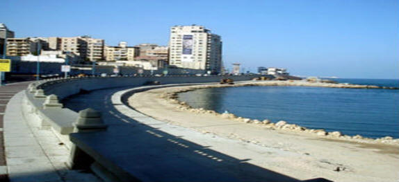

الدرس التاني....
الإسكندرية عروس البحر الأبيض المتوسط

قال بكار: قرأت أمس عن مدینة عریقة ، بھا معالم أثریة وتاریخیة :
فرعونیة، ویونانیة ، ورومانیة ، وقبطیة ، وإسلامیة. بالإضافة إلى الطبیعة الساحرة ؛
یتعانق التاریخ والطبیعة؛ كي یرسما معا لوحة رائعة على شاطئ البحر الأبیض المتوسط .
ھل تعرف ھذه المدینة یا بساط الریح ؟
بساط الریح : نعم نعم أنا أعرفھا یا بكار ، ھیا نذھب إلیھا ، إنھا الإسكندریة .
طاربساط الریح ، وبكار جالس فوقھ ، فرأى - من بعید - البحر الأبیض المتوسط ،ورأى
قلعة قایتباي ، ومتحف الأحیاء المائیة ، والمتحف الروماني ، والمسرح الروماني ،
وعمود السواري ، ومكتبة الإسكندریة
بكار : ما ھذا یا بساط الریح ؟ إنني أرى قصورا فخمة ، وحدائق غناء ، ھیا بنا نحلق
فوقھا لنعرف ما فیھا .
ھذا قصر المنتزه ، یطل على شاطئ البحر . إنني أشاھد أشجارا وأحواض زھور وحدائق
واسعة ، وكلھا بنیت على الطراز الإسلامي .
انظر یا بساط الریح ، ھذا قصر آخر ، یقع وسط حدائق خلابة
، تنتشر حولھا تماثیل ،وذلك قصر رأس التین
بساط الریح : إنني أرى كنائس ، ھذه "كاتدرائیة الكرازة المرقسیة" في محطة الرمل
بناھا أحد تلامذة السید المسیح ، وھذه كنائس أخرى .ومساجد كثیرة وھذا مسجد" سیدي
أبي العباس المرسي" وھذه مئذنتھ الشاھقة الارتفاع ، وقبابة الأربع وھذا مسجد الإمام
البوصیري" وھذه مساجد أخرى .
حقا إن مدینة الإسكندریة "عروس البحر المتوسوتاریخ